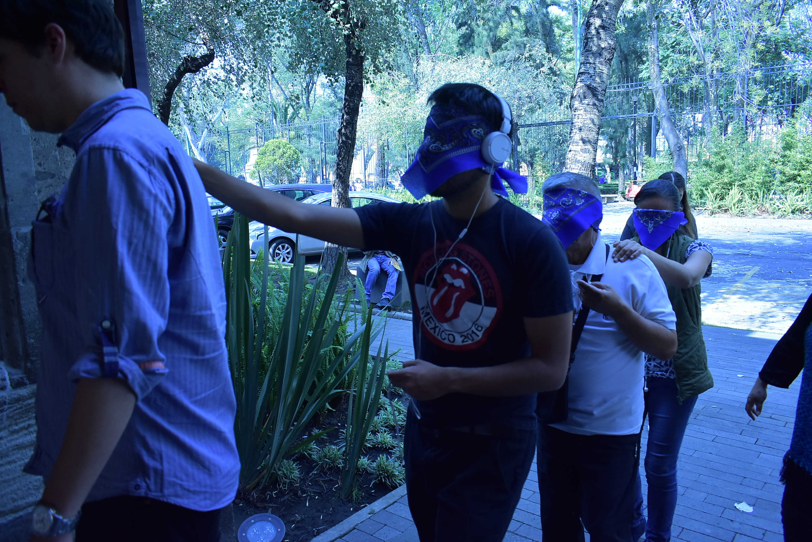
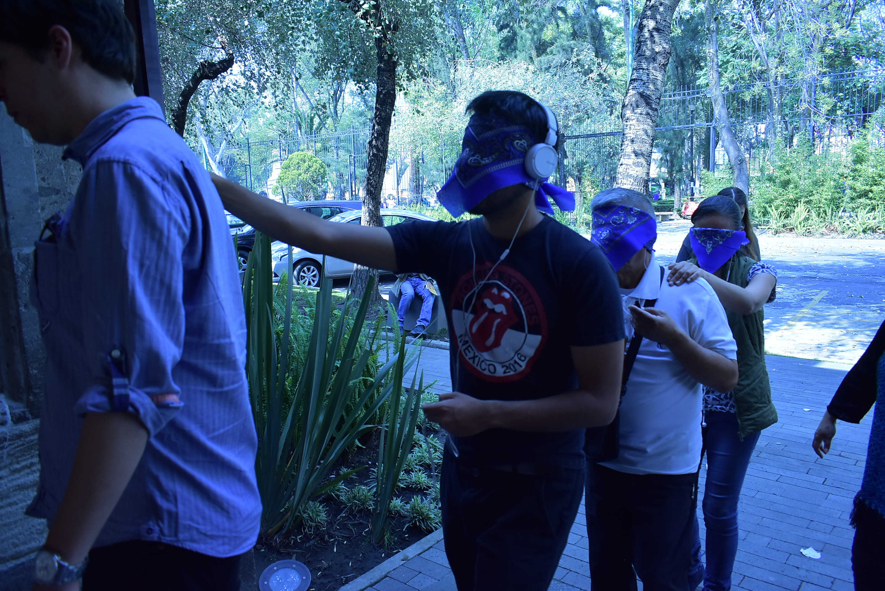

Así se siente mi barrio
Agosto-Noviembre 2018
Categorías: Instalación Interactiva
GitHub: https://github.com/psotresc
La instalación de diseño háptico multimodal “Así se siente mi barrio” fue el resultado de la selección para participar en la residencia artística Me sobra Barrio 2018 del Centro de la Imagen que fue realizada en colaboración con Carlos Guerrero, Angélica Martínez y Cristina Rivas. El objetivo de este proyecto fue el realizar un taller co-creativo para la creación de imágenes hápticas del cual posteriormente sus resultados serían expuestos en un formato interactivo. Se entiende por imagen háptica aquellas representaciones realizadas por personas con discapacidad visual, que reflejan los conceptos y las imágenes mentales provenientes de estímulos multisensoriales.con personas con discapacidad visual. A su vez el módulo obtuvo una Mención Honorífica en el Premio Nacional de Diseño de 2019, dentro de la categoría Diseño de Experiencias.
Lenguajes de Programación
Python
C++
Software
Arduino
illustrator
Photoshop
Para la creación del módulo interactivo se realizó un proceso participativo a través de la realización de diversas sesiones, unas en las en las que se compartieron narrativas de cada participante en cuanto a su experiencia de La Ciudadela, una de recorridos por los diversos fondo de la ciudadela, una sesión de de dibujo y otras de revisión y co-creación háptica, estas sesiones nos permitieron comprender y diseñar una instalación que pudiera mostrar los dibujos y las historias de cada uno de ellos relativas a cómo cada uno de los participantes percibe la Ciudadela.
Derivado de un proceso de observación se seleccionaron interfaces que las personas ciegas y con discapacidad visual utilizan en la biblioteca y de ellas resaltó en particular el dispositivo Sara, desarrollado por Freedom Scientific, este dispositivo escanea el texto que se coloca en su bandeja, y a través de software de voz lee el texto al usuario. Con base en este dispositivo se buscó una tecnología que pudiera tener una dinámica similar para el reconocimiento de los dibujos. Por ello se decidió cortar los dibujos en tablillas de MDF para que los usuarios pudieran sentir los dibujos realizados por los participantes del taller, y se colocó en cada tablilla un código de RFID (del inglés Radio Frequency Identification) el cual al ser colocado en la instalación permite al usuario escuchar el audio de lo que la persona había dibujado.
En la instalación se utilizó un ordenador de placa reducida Raspberry Pi 3 b+ y a través de sus puerto GPIO se conectaron un lector de RFID RC522, un LED para demostrar el estado de la instalación el cual podía ser modificado por dos botones, uno para el apagado y otro para reiniciar. Adicionalmente se conectó un módulo de relevadores de 2 canales, a los que se conectaban a unas bocinas y unos audífonos a través de un Divisor de audio de 3.5mm y los cuales se alternaban, cada determinado tiempo se invitaba a las personas a probar el módulo y se les decía las instrucciones. Si una persona colocaba un dibujo en el módulo se transmitía la señal a los audífonos.
Como una activación adicional al módulo se generó un recorrido en audio con los diversos testimonios recopilados de los recorridos con los participantes del taller, y se invitó a grupos de personas con discapacidad visual a realizarlo, así como también al público en general (se les invitaba a realizar el recorrido con los ojos vendados) y así visitar las diversas áreas de la biblioteca.
El módulo fue mostrado en el Museo Franz Mayer del 16 al 25 de octubre de 2019 y en la Biblioteca de México: 20 de octubre al 15 de diciembre de 2018 Universidad Autónoma Metropolitana: Diciembre 2019
Más información en el sitio web:
Sitio Web Centro de la Imagen
Página web de la División de la UAM Cuajimalpa

 
